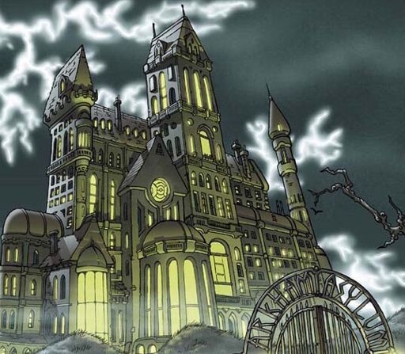
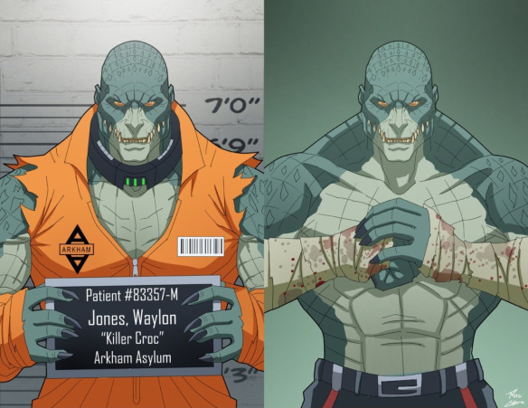

Welcome to the Arkham Asylum

Country:USA
City: Mercey Island
Owned by: Government of Gotham City Amadeus Arkham
Primary Use: Lockdown place for mentally insane criminals and villains. First
appearance: Batman # 258 (October, 1974)
The Elizabeth Arkham Asylum for the Criminally Insane is a building founded by Amadeus Arkham in November 1921 to lock up the mentally unstable criminals of Gotham City. Its exterior architecture is consistent with the madness that it keeps inside. It is the main psychiatric hospital in the city.
List of Arkham Asylum patients are:
- Joker: cell 562
- Bane: cell 1953
- Deadshot: cell 269
- Killer Croc: Special Cell
- Two-sided: cell 993
- Harley Queen: cell 41
- Deathstroke: cell 633
Patient Number 562

Real name: it is unknown
Profession: professional criminal
City: Gotham city
Height: 1m 83 cm
Weight: 73kg
First apparition: Batman (spring 1940)
Batman's great enemy and self-programmed clown prince of crime has an incredible ability to wreak havoc and his addiction to his deadly violence.
The Joker is responsible for two of the batman's greatest personal tragedies: the death of the second Robin, Jason Todd, and the paralysis of Barbara Gordon (Batgirl). Considered the antithesis of Batman, the Joker in a way represents the opposite side of Batman since while the hero is generally serious and fights against injustice, the Joker is usually scandalous and laughing and enjoys the idea of sowing terror. , chaos and generate a good laugh.
Patient Number 1953

Real name:
Profession:
City:
Height:
Weight:
First apparition: Batman: Vengeance of Bane # 1 (January 1993)
Bane has been one of Batman's strongest and best known enemies. An unstoppable guy known for breaking Batman's back.
During his time in prison he was known as the "king" of Peña Duro, along with his friends Trogg, zombie and Bird. The prison owners take notice and force him to become a test subject for a drug known as Venom, which had killed everyone who had tried it. The Venom nearly killed him, but he survived and increased his physical strength, the only downside is that the Venom must be injected every 12 hours (through a system of wires it is pumped directly into the brain) or he would suffer the debilitating side effects.
Patient Number 269

Real name:Floyd Lawton
Profession:
City:
Height:
Weight:
First apparition:Batman # 59 (June / July 1950)
Floyd Lawton, better known as Deadshot, is a gunman for hire, known for being the second deadliest assassin of all (Deathstroke being the first).
Deadshot is a hit man, who regularly boasts that he "never misses a shot". He is capable of using a wide variety of weapons, but prefers to use a silenced pair, mounted on his wrist. He initially appeared in Gotham City as a new crime fighter, but was revealed to be Batman's enemy when he tried to replace the Dark Knight. When this plan failed, he tried to become the king of Gotham's criminal underworld, but Batman and Commissioner Gordon publicly exposed their intentions, and he was sent to jail.
Patient Special Cell

Real name:
Profession:
City:
Height:
Weight:
First apparition:)
Waylon was born with an extreme case of hyperkeratosis complicated by ichthyosis, two skin diseases at the genetic level that cause (respectively) an excessive thickening of the outer layer of the skin, and a severe loss of fatty proteins in the epidermis, which dries and cracks forming scale-like sores and calluses.
Waylon was never inherently evil, but grew up as a troublesome child due to the fights he was involved in with those who made fun of him. It was thus that his ability in street fighting grew, spending almost half of his childhood in juvenile corrections, where he learned bad arts from other inmates.
Being alone, frustrated and full of hatred, he then has an epiphany: he was always accused of being a monster and an animal, and he was punished when he tried to defend himself by proving otherwise. After a "simple" murder in prison, he became respected and feared. That led him to consider the idea that if he could not win people's affections with his kindness, he would win their fear and respect with his strength and savagery.
Es así como Killer Croc decide dedicarse al crimen, ya sea como guardaespaldas o sicario de algunos mafiosos, o bien formando su propia pandilla para realizar asaltos, lo que irremediablemente lo llevó a cruzarse con Batman.